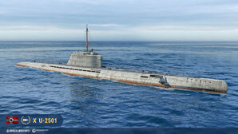

U-2501 – niemiecki okręt podwodny typu XXI czasów II wojny światowej.
Okręt został zwodowany 5 maja 1944 roku w stoczni Blohm & Voss w Hamburgu i przyjęty do służby w Kriegsmarine 27 czerwca 1944 roku.
Jednostka o wyporności nawodnej 1621 ton, wyposażona była w dwa główne silniki elektryczne SSW/AEG GU365/30 o łącznej mocy 5000 KM, dwa silniki elektryczne cichego napędu GW323/28 o mocy 222 KM oraz dwa silniki Diesla MAN M6V 40/46 o łącznej mocy 4000 KM.
Dzięki bardzo dużej pojemności akumulatorów, nowej opływowej linii kadłuba - pozbawionego występów oraz działa, jednostka była jednym z pierwszych okrętów podwodnych w historii zdolnych do rozwijania pod wodą prędkości większej niż na powierzchni.
Te same cechy umożliwiały jej znacznie dłuższe niż dotąd pływanie podwodne.
5 maja 1945 roku wpłynął na mieliznę w pobliżu Flensburga, gdzie 23 lipca 1945 roku został wysadzony w powietrze przez Royal Navy.
